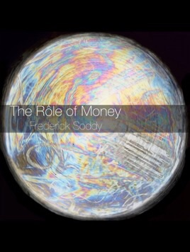

00075
shizuku
05075
-
なごり雪（惜别之雪）イルカ 日文版
Link: m.youtube.com/watch-
鬼束ちひろ なごり雪
Link: youtube.com/watch -
「なごり雪」イルカ
Link: youtube.com/watch
-
05175
- several kinds of fantasy: or, a way to find books we want to read
yonatan zunger 2017
https://medium.com/@yonatanzunger/several-kinds-of-fantasy-ffb6b40ddceb
05275
- publishing
-
itunes producer
- itunes producer will not accept picture sizes at original resolution. need to create 1400px width image especially for the cover included in the epub
-
use svg for diagrams
- in epub code
-
- example script from Greek philosophy
- in epub code
-
bugs
- epubcheck has bug where it cannot cope with lower case I gamma in heading, so replaced with smallcaps I.
- numbers that start a paragraph must be of form (6) to work with pandoc
-
wealth, virtual wealth, and debt
- Canada epub
Link: fadedpage.com/showbook.php
- Canada epub
-
biophysical economics
http://www.eoearth.org/view/article/150665/
Link: eoearth.org/view/article/150665/ -
legal deposit
- BRITISH LIBRARY legal-deposit-books@bl.uk Dear Maki, We would be pleased to accept a copy of the item mentioned. There is no need to use a reference number. Simply post us one copy with a short covering note or compliment slip giving your postal address so that we can send you a receipt. The address to post it to is- Legal Deposit Office The British Library Boston Spa Wetherby West Yorkshire LS23 7BY Kind regards, Dominica Taylor Legal Deposit Monographs — AGENCY FOR LEGAL DEPOSIT LIBRARIES publisherenquiries@legaldeposit.org.uk Tel: 0131 623 4680 Dear Sir/Madam, Thank you for your enquiry regarding deposit of new titles. We would require you to send 5 copies of each title enclosing a compliment slip with up to date address details. We will then forward your publication onto Bodleian Library Oxford University, Cambridge University Library, National Library of Scotland, National Library of Wales and Trinity College Dublin in accordance with the Legal Deposit Libraries Act 2003. All items should be deposited to our address at Agency for the Legal Deposit Libraries, 161 Causewayside, Edinburgh, EH9 1PH. Yours Sincerely Karen Pender Administrator The Agency for the Legal Deposit Libraries
-
open book publishers
- http://cambridge.academia.edu/AlessandraTosi
-
register vat eu necessary
- https://www.gov.uk/vat-registration/registering-vat-other-eu-countries
-

05375
- how i read ebooks
- three (or more) books on the go ‘simultaneously”, each in a different app
- one i don’t like but want to read nonetheless
- one for short bursts
- one i like
- (one am trying out)
- three (or more) books on the go ‘simultaneously”, each in a different app
05475
- read epub
-
yomu
yomu-reader.com/- quotes are “clean”, no added attribution, does not truncate
- does not automatically return to last open book after app has been closed completely (i.e. app no longer in memory)
- to export files without using cloud services, export to email, save draft, copy document from draft email
-
ibooks
Link: itunes.apple.com/us/app/id364709193- displays embedded epub font correctly
- quotes are not “clean”, adds attribution for longer quotes and can truncate them
- Bluetooth page turning on ios. 3d touch for recent books, most recent furthest
-
archive
-
gerty (ios)
Link: appstafarian.com/gerty.html- can send to other apps
- scroll text
- can send to other apps
-
marvin 3 (ios)
Link: marvinapp.com- can send to other apps
- next page tap on either margin (good for left–handed use), narrow margin, screen dimming
there is a current bug that does not return to last page location when switching back to the app
- next page tap on either margin (good for left–handed use), narrow margin, screen dimming
- can send to other apps
-
hyphen (ios)
Link: hyphenreader.com/- can send to other apps
- good colour selection, screen dimming, no option to hide page transition; note it kept all books so until deleted app, took up large amounts of space
- can send to other apps
-
gitden reader (ios)
Link: itunes.apple.com/gb/app/gitden-reader-epub-3-reflow/id524939666-
3d touch for recent books
most recent nearest- next page tap or scroll
-
-
use each app to open a specific book you are reading so that you switch apps rather than switching books within one app; can also use free versions of hyphen and marvin for “extra” books
-
-
05575
- read pdf
-
readdle documents, or readdle pdf expert
readdle.com/documents
thesweetsetup review- night mode reverses black and white on screen
-
goodreader (ios)
Link: goodreader.com- remembers zoomed state, unlike ibooks
- interesting night-mode reading setting for pdfs, first extracts text to text mode, then apply night mode. note, you cannot see any diagrams or pictures in this mode, and cannot easily go back to normal mode (but after going into another document, it exits automatically back to normal mode)
- good support for larger text sizes once in text mode
-
drm removal untested
apprenticealf.wordpress.com/
-
05675
- text selection by tapping on touch–keyboard with two fingers, once to select current word, twice to select paragraph, is very useful in latest ios on ipad
05775
- keyboard
-
ios external bluetooth shortcuts
-
to change keyboard language
- fn
- toggles between last used keyboard if used on its own
-
list of additional external keyboard shortcuts supported by each app, may be context–specific
- hold cmd key
-
task switcher
- cmd–tab
-
home
- cmd–home
-
spotlight search
- cmd–space
toggles on/off
- cmd–space
-
page up/down in safari
- option–up/down
-
-
mac keyboard as bluetooth input to ios
- 1keyboard
Link: eyalw.com/1keyboard
- 1keyboard
-
temporarily stop keyboard (mac)
for when a cat wants to sit on your laptop or a baby wants to play with it- keyboardcleantool
Link: blog.boastr.net/
- keyboardcleantool
-
05875
05975
06075
- writing
-
elmore Leonard rules of writing
-
“Never open a book with weather.
If it’s only to create atmosphere, and not a character’s reaction to the weather, you don’t want to go on too long. The reader is apt to leaf ahead looking for people. There are exceptions. If you happen to be Barry Lopez, who has more ways to describe ice and snow than an Eskimo, you can do all the weather reporting you want.Avoid prologues.
They can be annoying, especially a prologue following an introduction that comes after a foreword. But these are ordinarily found in nonfiction. A prologue in a novel is backstory, and you can drop it in anywhere you want.There is a prologue in John Steinbeck’s Sweet Thursday, but it’s O.K. because a character in the book makes the point of what my rules are all about. He says: “I like a lot of talk in a book and I don’t like to have nobody tell me what the guy that’s talking looks like. I want to figure out what he looks like from the way he talks. . . . figure out what the guy’s thinking from what he says. I like some description but not too much of that. . . . Sometimes I want a book to break loose with a bunch of hooptedoodle. . . . Spin up some pretty words maybe or sing a little song with language. That’s nice. But I wish it was set aside so I don’t have to read it. I don’t want hooptedoodle to get mixed up with the story.”
Never use a verb other than “said” to carry dialogue.
The line of dialogue belongs to the character; the verb is the writer sticking his nose in. But said is far less intrusive than grumbled, gasped, cautioned, lied. I once noticed Mary McCarthy ending a line of dialogue with “she asseverated,” and had to stop reading to get the dictionary.Never use an adverb to modify the verb “said” …
…he admonished gravely. To use an adverb this way (or almost any way) is a mortal sin. The writer is now exposing himself in earnest, using a word that distracts and can interrupt the rhythm of the exchange. I have a character in one of my books tell how she used to write historical romances “full of rape and adverbs.”Keep your exclamation points under control.
You are allowed no more than two or three per 100,000 words of prose. If you have the knack of playing with exclaimers the way Tom Wolfe does, you can throw them in by the handful.Never use the words “suddenly” or “all hell broke loose.”
This rule doesn’t require an explanation. I have noticed that writers who use “suddenly” tend to exercise less control in the application of exclamation points.Use regional dialect, patois, sparingly.
Once you start spelling words in dialogue phonetically and loading the page with apostrophes, you won’t be able to stop. Notice the way Annie Proulx captures the flavor of Wyoming voices in her book of short stories Close Range.Avoid detailed descriptions of characters.
Which Steinbeck covered. In Ernest Hemingway’s Hills Like White Elephants what do the “American and the girl with him” look like? “She had taken off her hat and put it on the table.” That’s the only reference to a physical description in the story, and yet we see the couple and know them by their tones of voice, with not one adverb in sight.Don’t go into great detail describing places and things.
Unless you’re Margaret Atwood and can paint scenes with language or write landscapes in the style of Jim Harrison. But even if you’re good at it, you don’t want descriptions that bring the action, the flow of the story, to a standstill.And finally:
Try to leave out the part that readers tend to skip.
A rule that came to mind in 1983. Think of what you skip reading a novel: thick paragraphs of prose you can see have too many words in them. What the writer is doing, he’s writing, perpetrating hooptedoodle, perhaps taking another shot at the weather, or has gone into the character’s head, and the reader either knows what the guy’s thinking or doesn’t care. I’ll bet you don’t skip dialogue.My most important rule is one that sums up the 10.
If it sounds like writing, I rewrite it.
Or, if proper usage gets in the way, it may have to go. I can’t allow what we learned in English composition to disrupt the sound and rhythm of the narrative. It’s my attempt to remain invisible, not distract the reader from the story with obvious writing. (Joseph Conrad said something about words getting in the way of what you want to say.)
If I write in scenes and always from the point of view of a particular character — the one whose view best brings the scene to life — I’m able to concentrate on the voices of the characters telling you who they are and how they feel about what they see and what’s going on, and I’m nowhere in sight.
What Steinbeck did in Sweet Thursday was title his chapters as an indication, though obscure, of what they cover. “Whom the Gods Love They Drive Nuts” is one, “Lousy Wednesday” another. The third chapter is titled “Hooptedoodle 1″ and the 38th chapter “Hooptedoodle 2″ as warnings to the reader, as if Steinbeck is saying: “Here’s where you’ll see me taking flights of fancy with my writing, and it won’t get in the way of the story. Skip them if you want.”
Sweet Thursday came out in 1954, when I was just beginning to be published, and I’ve never forgotten that prologue.
Did I read the hooptedoodle chapters? Every word.”
-
-
commentary rules
- set the scene
- describe the action
- give the score or results, regularly and succinctly
- explain, without interrupting, the stadium’s reaction to the game’s event
- share “homework,” such as historical facts and figures or personal information; and
- assess the significance of the occasion and key moments.
-
06175
06275
-
wired for story: the writer’s guide to using brain science to hook readers from the very first sentence
lisa cron 2012 9781607742463- how to hook the reader
- cognitive secret: we think in story, which allows us to envision the future.
- story secret: from the very first sentence, the reader must want to know what happens next.
- chapter 1
- Antonio Damasio: “The problem of how to make all this wisdom understandable, transmissible, persuasive, enforceable—in a word, of how to make it stick—was faced and a solution found. Storytelling was the solution—storytelling is something brains do, naturally and implicitly.… [I]t should be no surprise that it pervades the entire fabric of human societies and cultures.”
- Story evolved as a way to explore our own mind and the minds of others, as a sort of dress rehearsal for the future.6 As a result, story helps us survive not only in the life-and-death physical sense but also in a life-well-lived social sense.
- expectations have everything to do with the story’s ability to provide information on how we might safely navigate this earthly plane. To that end, we run them through our own very sophisticated subconscious sense of what a story is supposed to do: plunk someone with a clear goal into an increasingly difficult situation they then have to navigate. When a story meets our brain’s criteria, we relax and slip into the protagonist’s skin, eager to experience what his or her struggle feels like, without having to leave the comfort of home.
- A story is how what happens affects someone who is trying to achieve what turns out to be a difficult goal, and how he or she changes as a result. Breaking it down in the soothingly familiar parlance of the writing world, this translates to
- “What happens” is the plot.
- “Someone” is the protagonist.
- The “goal” is what’s known as the story question.
- And “how he or she changes” is what the story itself is actually about.
- a story is not about the plot or even what happens in it. Stories are about how we, rather than the world around us, change. They grab us only when they allow us to experience how it would feel to navigate the plot. Thus story, as we’ll see throughout, is an internal journey, not an external one.
- All the elements of a story are anchored in this very simple premise, and they work in unison to create what appears to the reader as reality, only sharper, clearer, and far more entertaining, because stories do what our cognitive unconscious does: filter out everything that would distract us from the situation at hand. In fact, stories do it better, because while in real life it’s nearly impossible to filter out all the annoying little interruptions—like leaky faucets, dithering bosses, and cranky spouses—a story can tune them out entirely as it focuses in on the task at hand: What does your protagonist have to confront in order to solve the problem you’ve so cleverly set up for her? And that problem is what the reader is going to be hunting for from the get-go, because it’s going to define everything that happens from the first sentence on.
- we are looking for a reason to care. So for a story to grab us, not only must something be happening, but also there must be a consequence we can anticipate.
- What is this book about?
- the three basic things readers relentlessly hunt for as they read that first page:
-
- Whose story is it?
- visceral. We climb inside the protagonist’s skin and become sensate, feeling what he feels.
-
- What’s happening here?
- cues us to the problem the protagonist will spend the story struggling with.
-
- What’s at stake?
- conflict that is specific to the protagonist’s quest
- if stories are simulations that our brains plumb for useful information in case we ever find ourselves in a similar situation, we sort of need to know what the situation is.
- By giving us a glimpse of the big picture, George provides a yardstick that allows us to decode the meaning of everything that befalls Joel. Such yardsticks are like a mathematical proof—they let the reader anticipate what things are adding up to. Which makes them even more useful for the intrepid writer, because a story’s yardstick mercilessly reveals those passages that don’t seem to add up at all, unmasking them as the one thing you want to banish from your story at all costs.
- summary chapter 1:
- Do we know whose story it is? There must be someone through whose eyes we are viewing the world we’ve been plunked into—aka the protagonist. Think of your protagonist as the reader’s surrogate in the world that you, the writer, are creating.
- Is something happening, beginning on the first page? Don’t just set the stage for later conflict. Jump right in with something that will affect the protagonist and so make the reader hungry to find out what the consequence will be. After all, unless something is already happening, how can we want to know what happens next?
- Is there conflict in what’s happening? Will the conflict have a direct impact on the protagonist’s quest, even though your reader might not yet know what that quest is?
- Is something at stake on the first page? And, as important, is your reader aware of what it is?
- Is there a sense that “all is not as it seems”? This is especially important if the protagonist isn’t introduced in the first few pages, in which case it pays to ask: Is there a growing sense of focused foreboding that’ll keep the reader hooked until the protagonist appears in the not-too-distant future?
- Can we glimpse enough of the “big picture” to have that all-important yardstick? It’s the “big picture” that gives readers perspective and conveys the point of each scene, enabling them to add things up. If we don’t know where the story is going, how can we tell if it’s moving at all?
- how to zero in on your point
- cognitive secret: when the brain focuses its full attention on something, it filters out all unnecessary information.
- story secret: to hold the brain’s attention, everything in a story must be there on a need-to-know basis.
- chapter 2
- synthesis of three elements that work in unison to create a story: the protagonist’s issue, the theme, and the plot.
- story isn’t about whether or not the protagonist achieves her goal per se; it’s about what she has to overcome internally to do it. This is what drives the story forward. I call it the protagonist’s issue.
- the theme, is what your story says about human nature. Theme tends to be reflected in how your characters treat each other, so it defines what is possible and what isn’t in the world the story unfolds in. As we’ll see, it’s often what determines whether the protagonist’s efforts will succeed or fail, regardless of how heroic she is.
- plot itself—the events that relentlessly force the protagonist to deal with her issue as she pursues her goal, no matter how many times she tries to make an end run around her issue along the way.
- focus, telling readers what it’s about and allowing them to interpret the events as they unfold and thus anticipate where it’s heading. This is crucial because “minds exist to predict what will happen next.”6 It’s their raison d’être—the better to keep us on this earthly plane as long as humanly possible. We love to figure things out and we don’t like being confused. For writers, focus is of utmost importance as well: the first two elements (the protagonist’s issue and the theme) are the lens through which we determine what the events (the plot) will be.
- theme:
- • What does the story tell us about what it means to be human?
- • What does it say about how humans react to circumstances beyond their control?
- Theme often reveals the point your story is making—and all stories make a point, beginning on page one. But that doesn’t mean you have to hit readers over the head with it.
- MYTH: The Plot Is What the Story Is About
- REALITY: A Story Is About How the Plot Affects the Protagonist
- even when the protagonist doesn’t appear on the first page, everything that happens before he shows up must occur with a clear eye toward how it will affect him when he finally ambles in.
- Since theme is the underlying point the narrative makes about the human experience, it’s also where the universal lies. The universal is a feeling, emotion, or truth that resonates with us all.
- story’s tone reflects how you see your characters and helps define the world you’ve set them loose in. Tone is often how theme is conveyed, by cueing your readers to the emotional prism through which you want them to view your story
- the more passionate you are about making your point, the more you have to trust your story to convey it
- the central theme must provide a point of view precise enough to give us specific insight into the protagonist and her internal issue, yet be broad enough to take into account everything that happens
- In Gone with the Wind, Scarlett’s gumption came first, so—for better or worse—it affects everything else: her love life, her refusal to be constrained by the mores of the day, and her insatiable need to take action when she doesn’t get what she wants.
- the plot’s goal isn’t simply to find out whether he snags that brass ring or not; rather, it’s to force him to confront the internal issue that’s keeping him from it in the first place. This issue is sometimes called the protagonist’s “fatal flaw,” and whether a deep-rooted fear, a stubborn misperception, or a dubious character trait, it’s what he’s been battling throughout and what he must finally overcome to have a clear shot at the last remaining obstacle. Ironically, once he overcomes it, he often realizes true success is vastly different from what, up to that very second, he thought it was.
- Gone with the Wind is about a headstrong southern belle whose unflinching gumption causes her to spurn the only man who is her equal, as she ruthlessly bucks crumbling social norms in order to survive during the Civil War by keeping the one thing she mistakenly believes matters most: her family estate, Tara.
- taken the theme—survival driven by gumption—harnessed it to Scarlett’s issue, and then run them both through the hurdles the plot lays out for her.
- chapter 2 summary
- Do you know what the point of your story is? What do you want people to walk away thinking about? How do you want to change how they see the world?
- Do you know what your story says about human nature? Stories are our way of making sense of the world, so each and every one tells us something about what it means to be human, whether the author does it on purpose or not. What is your story saying?
- Do the protagonist’s inner issue, the theme, and the plot work together to answer the story question? How can you tell? Ask yourself: Is my theme reflected in the way the world treats my protagonist? Does each plot twist and turn force my protagonist to deal with his inner issue, the thing that’s holding him back?
- Do the plot and theme stick to the story question? Remember, the story question will always be in the back of your reader’s mind, and it is the responsibility of each theme-laced event to keep it there.
- Can you sum up what your story is about in a short paragraph? One way to begin is to ask yourself how your theme shapes your plot. Put yourself through the paces just as we did with Gone with the Wind. It may be painful, but it’ll pay off big time in the end.
- i’ll feel what he’s feeling
- cognitive secret: emotion determines the meaning of everything—if we’re not feeling, we’re not conscious.
- story secret: all story is emotion based—if we’re not feeling, we’re not reading.
- what does your protagonist really want?
- cognitive secret: everything we do is goal directed, and our biggest goal is figuring out everyone else’s agenda, the better to achieve our own.
- story secret: a protagonist without a clear goal has nothing to figure out and nowhere to go.
- digging up your protagonist’s inner issue
- cognitive secret: we see the world not as it is, but as we believe it to be.
- story secret: you must know precisely when, and why, your protagonist’s worldview was knocked out of alignment.
- the story is in the specifics
- cognitive secret: we don’t think in the abstract; we think in specific images.
- story secret: anything conceptual, abstract, or general must be made tangible in the protagonist’s specific struggle.
- courting conflict, the agent of change
- cognitive secret: the brain is wired to stubbornly resist change, even good change.
- story secret: story is about change, which results only from unavoidable conflict.
- cause and effect
- cognitive secret: from birth, our brain’s primary goal is to make causal connections—if this, then that.
- story secret: a story follows a cause-and-effect trajectory from start to finish.
- what can go wrong, must go wrong—and then some
- cognitive secret: the brain uses stories to simulate how we might navigate difficult situations in the future.
- story secret: a story’s job is to put the protagonist through tests that, even in her wildest dreams, she doesn’t think she can pass.
- the road from setup to payoff
- cognitive secret: since the brain abhors randomness, it’s always converting raw data into meaningful patterns, the better to anticipate what might happen next.
- story secret: readers are always on the lookout for patterns; to your reader, everything is either a setup, a payoff, or the road in between.
- meanwhile, back at the ranch
- cognitive secret: the brain summons past memories to evaluate what’s happening in the moment in order to make sense of it.
- story secret: foreshadowing, flashbacks, and subplots must instantly give readers insight into what’s happening in the main storyline, even if the meaning shifts as the story unfolds.
- the writer’s brain on story
- cognitive secret: it takes long-term, conscious effort to hone a skill before the brain assigns it to the cognitive unconscious.
- story secret: there’s no writing; there’s only rewriting.
- how to hook the reader
06375
06475
- bookbinding
-
japanese bookbinding: instructions from a master craftsman
kojiro ikegami 1986 978-0834801967 -
top 10 japanese bookbinding sites
ibookbinding.com/bookbinding-styles/japanese-binding/top-10-japanese-stab-binding-tutorials-on-the-internet/
-
06575
06675
- six ages
2018 not yet read
https://itunes.apple.com/gb/app/six-ages-ride-like-the-wind/id934012726?mt=8
06775
06875
06975
07075
07175
07275
07375
07475
07575
07675
07775
07875
07975
08075
08175
08275
08375
08475
08575
08675
08775
08875
08975
09075
-
ios third–party keyboards
in stock ios, Dvorak and Greek polytonic layouts are available for bluetooth keyboard via external hardware only, not available in on–screen, control space to change between two hardware keyboard layouts-
due to software crashes with third–party keyboards, have resumed using ios stock keyboard; when using external bluetooth keyboard, can use dvorak layout
-
type without looking
fleksy. correct, space by swiping. focus on writing rather than keyboard — good for flow. using fleksy dvorak layout, shortcuts for –—…‘’“” , number row, cursor forward/back via long press on space bar
Link: fleksy.com-
detailed
settings- off
- autocaps
- autocorrect with punctuation
- show suggestions
- side buttons
- smart spacing
- (trying) no space after punctuation
- show language in spacebar
- display homerow
- on
- auto correction
- swipe up to revert to non–autocorrected word
- double space for punctuation
- case sensitive layout
- fast delete
- delete word with swipe left
- show all accents
- enables accents in long press
- longpress for numbers
- enables brackets in long press
- auto correction
- font helvetica neue thin
- magic button globe
- off
-
-
type by sliding two fingers
-
nintype. relatively silent as you can swipe across the keyboard rather than tapping
Link: jormy.com/nintype/ -
can set different width for landscape and portrait mode
-
can customise individual keys
-
-
type by sliding one finger
(alphabets only)- swype. simpler, more reliable than nintype. requires single swipe for all letters of entire word
Link: swype.com
- swype. simpler, more reliable than nintype. requires single swipe for all letters of entire word
-
bilingual autocorrect
(alphabets only)- swiftkey
Link: itunes.apple.com/gb/app/swiftkey-keyboard/id911813648
- swiftkey
-
archive
-
copied (also mac)
Link: itunes.apple.com/gb/app/copied-copy-paste-everywhere/id1015767349- acts as a repository for reusable text etc
has url scheme
share clipboard through icloud to other devices
Link: copiedapp.com/help/
- acts as a repository for reusable text etc
-
-
09175
09275
-
create ebook (epub)
-
pandoc (mac) free
publish custom epub via command line scripts
http://www.johnmacfarlane.net/pandoc/-
documentation
http://www.johnmacfarlane.net/pandoc/README.html -
pandoc on ios via pythonista and webservice
http://wcm1.web.rice.edu/pandoc-on-ios.html -
example shell scripts shell script 1, shell script 2, shell script 3 for creating three different epubs via pandoc from multiple markdown files, images and audio in the same root folder on a mac.
-
-
epub audio, with controls, looping, and autoplay, e.g.
<audio src=“audio/20140117imagine-original-clip-songbook.mp3” controls=“controls” loop=“loop” autoplay=“autoplay”>piano only</audio> -
scrivener, bear, apple pages
09375
- make pdf
-
save as pdf (mac)
-
create keyboard shortcut for the submenu as follows: system preferences - keyboard - shortcuts - all applications - add
Save as PDF… Open PDF in Previewassign these as cmd-s and cmd-o. When printing, i.e. cmd-p as usual, you now have shortcuts for the submenus, cmd-s and cmd-o.
Link: macsparky.com/blog/2013/10/print-to-pdf-revisited
-
-
combine pdfs
- for example, open multiple pdfs exported from ithoughtsHD, combine them by dragging one document on top of other and once combined. remove original file
-
save as pdf (ios)
- use workflow app
-
09475
-
smartquotes
Link: support.apple.com/kb/PH14294- in apple textedit app: edit > substitutions > show substitutions, select text replacement, smartquotes, replace all
09575
09675
-
free ebooks
- roy glashan’s library
freeread.com.au/index.html
- roy glashan’s library
-
science and nature
-
sci-hub.tw
sci-hub.tw/ -
ebookhunter.ch
ebookhunter.ch/Books/Science & Math -
ebook3000.com
ebook3000.com/Science/ -
eb4all.com
eb4all.com/category/science/ -
ebook4expert.org
ebook4expert.org
-
-
older books
-
b-ok.xyz
b-ok.xyz/ -
booksee.org
m.booksee.org/ -
general-ebooks.com
general-ebooks.com/ -
avxhm.se
avxhm.se/ -
ebook777.com
ebook777.com/ -
ebook-dl.com
ebook-dl.com
-
-
novels
- ibookpile.net
ibookpile.net/
- ibookpile.net
09775
09875
- not yet read
-
the gist of reading
andrew elfenbein 2018 -
the paper trail: an unexpected history of the world’s greatest invention
alexander monro 2014 -
on paper: the everything of its two-thousand-year history
nicholas basbanes 2013 -
the book: a cover-to-cover exploration of the most powerful object of our time
keith houston 2016 -
write no matter what: advice for academics
joli jensen 2017 -
reader, come home: the fate of the reading brain in a digital world
maryanne wolf 2018
-
09975
- fiction
- i met a traveller in an antique land
connie willis 2018
- i met a traveller in an antique land
04975
04875
04775
04675
04575
04475
04375
04275
04175
04075
03975
03875
03775
03675
03575
03475
03375
03275
03175
03075
02975
02875
02775
02675
02575
02475
02375
02275
02175
02075
01975
01875
01775
01675
01575
01475
01375
01275
-
maki lam,
aya hayashi
1976–-
love and trust and
somesuch spells;
the rising power of
responsible people
2010

Link: openlibrary.org/works/OL15691870W/Love_and_trust_and_somesuch_spells -
scroll, shield, and spear
2017
Link: makiaea.org/00100
-
01175
01075
00975
00875
-
frederick soddy
1887–1956
Link: en.wikipedia.org/wiki/Frederick_Soddy-
the rôle of money;
what it should be,
contrasted with what
it has become
second edition 2015

Link: openlibrary.org/books/OL25683252M/The_Rôle_of_Money-
2014 epub
also available on ibooks and kindle e.g. us, ukLink: dropbox.com/s/x9b26f6piiv46mn/20140123roleofmoney.epub
-
Mr. Soddy’s Ecological Economy
NYTIMES OP-ED CONTRIBUTOR
Mr. Soddy’s Ecological EconomyBy ERIC ZENCEY
Eric Zencey, a professor of historical and political studies at Empire State College, is the author of “Virgin Forest: Meditations on History, Ecology and Culture” and a novel, “Panama.”Published: April 11, 2009
Montpelier, Vt.-
Mr. Soddy’s Ecological Economy
NYTIMES OP-ED CONTRIBUTOR
Mr. Soddy’s Ecological EconomyBy ERIC ZENCEY
Eric Zencey, a professor of historical and political studies at Empire State College, is the author of “Virgin Forest: Meditations on History, Ecology and Culture” and a novel, “Panama.”Published: April 11, 2009
Montpelier, Vt.INNOVATIVE and opaque instruments of debt; greedy bankers; lenders’ eagerness to take on risky loans; a lack of regulation; a shortage of bank liquidity: all have been nominated as the underlying cause of the largest economic downturn since the Great Depression. But a more perceptive, and more troubling, diagnosis is suggested by the work of a little-regarded British chemist-turned-economist who wrote before and during the Great Depression.
Frederick Soddy, born in 1877, was an individualist who bowed to few conventions, and who is described by one biographer as a difficult, obstinate man. A 1921 Nobel laureate in chemistry for his work on radioactive decay, he foresaw the energy potential of atomic fission as early as 1909. But his disquiet about that power’s potential wartime use, combined with his revulsion at his discipline’s complicity in the mass deaths of World War I, led him to set aside chemistry for the study of political economy — the world into which scientific progress introduces its gifts. In four books written from 1921 to 1934, Soddy carried on a quixotic campaign for a radical restructuring of global monetary relationships. He was roundly dismissed as a crank.
He offered a perspective on economics rooted in physics — the laws of thermodynamics, in particular. An economy is often likened to a machine, though few economists follow the parallel to its logical conclusion: like any machine the economy must draw energy from outside itself. The first and second laws of thermodynamics forbid perpetual motion, schemes in which machines create energy out of nothing or recycle it forever. Soddy criticized the prevailing belief of the economy as a perpetual motion machine, capable of generating infinite wealth — a criticism echoed by his intellectual heirs in the now emergent field of ecological economics.
A more apt analogy, said Nicholas Georgescu-Roegen (a Romanian-born economist whose work in the 1970s began to define this new approach), is to model the economy as a living system. Like all life, it draws from its environment valuable (or “low entropy”) matter and energy — for animate life, food; for an economy, energy, ores, the raw materials provided by plants and animals. And like all life, an economy emits a high-entropy wake — it spews degraded matter and energy: waste heat, waste gases, toxic byproducts, apple cores, the molecules of iron lost to rust and abrasion. Low entropy emissions include trash and pollution in all their forms, including yesterday’s newspaper, last year’s sneakers, last decade’s rusted automobile.
Matter taken up into the economy can be recycled, using energy; but energy, used once, is forever unavailable to us at that level again. The law of entropy commands a one-way flow downward from more to less useful forms. An animal can’t live perpetually on its own excreta. Neither can you fill the tank of your car by pushing it backwards. Thus, Georgescu-Roegen, paraphrasing the economist Alfred Marshall, said: “Biology, not mechanics, is our Mecca.”
Following Soddy, Georgescu-Roegen and other ecological economists argue that wealth is real and physical. It’s the stock of cars and computers and clothing, of furniture and French fries, that we buy with our dollars. The dollars aren’t real wealth, but only symbols that represent the bearer’s claim on an economy’s ability to generate wealth. Debt, for its part, is a claim on the economy’s ability to generate wealth in the future. “The ruling passion of the age,” Soddy said, “is to convert wealth into debt” — to exchange a thing with present-day real value (a thing that could be stolen, or broken, or rust or rot before you can manage to use it) for something immutable and unchanging, a claim on wealth that has yet to be made. Money facilitates the exchange; it is, he said, “the nothing you get for something before you can get anything.”
Problems arise when wealth and debt are not kept in proper relation. The amount of wealth that an economy can create is limited by the amount of low-entropy energy that it can sustainably suck from its environment — and by the amount of high-entropy effluent from an economy that the environment can sustainably absorb. Debt, being imaginary, has no such natural limit. It can grow infinitely, compounding at any rate we decide.
Whenever an economy allows debt to grow faster than wealth can be created, that economy has a need for debt repudiation. Inflation can do the job, decreasing debt gradually by eroding the purchasing power, the claim on future wealth, that each of your saved dollars represents. But when there is no inflation, an economy with overgrown claims on future wealth will experience regular crises of debt repudiation — stock market crashes, bankruptcies and foreclosures, defaults on bonds or loans or pension promises, the disappearance of paper assets.
It’s like musical chairs — in the wake of some shock (say, the run-up of the price of gas to $4 a gallon), holders of abstract debt suddenly want to hold money or real wealth instead. But not all of them can. One person’s loss causes another’s, and the whole system cascades into crisis. Each and every one of the crises that has beset the American economy in recent years has been, at heart, a crisis of debt repudiation. And we are unlikely to avoid more of them until we stop allowing claims on income to grow faster than income.
Soddy would not have been surprised at our current state of affairs. The problem isn’t simply greed, isn’t simply ignorance, isn’t a failure of regulatory diligence, but a systemic flaw in how our economy finances itself. As long as growth in claims on wealth outstrips the economy’s capacity to increase its wealth, market capitalism creates a niche for entrepreneurs who are all too willing to invent instruments of debt that will someday be repudiated. There will always be a Bernard Madoff or a subprime mortgage repackager willing to set us up for catastrophe. To stop them, we must balance claims on future wealth with the economy’s power to produce that wealth. How can that be done?
Soddy distilled his eccentric vision into five policy prescriptions, each of which was taken at the time as evidence that his theories were unworkable: The first four were to abandon the gold standard, let international exchange rates float, use federal surpluses and deficits as macroeconomic policy tools that could counter cyclical trends, and establish bureaus of economic statistics (including a consumer price index) in order to facilitate this effort. All of these are now conventional practice.
Soddy’s fifth proposal, the only one that remains outside the bounds of conventional wisdom, was to stop banks from creating money (and debt) out of nothing. Banks do this by lending out most of their depositors’ money at interest — making loans that the borrower soon puts in a demand deposit (checking) account, where it will soon be lent out again to create more debt and demand deposits, and so on, almost ad infinitum.
One way to stop this cycle, suggests Herman Daly, an ecological economist, would be to gradually institute a 100-percent reserve requirement on demand deposits. This would begin to shrink what Professor Daly calls “the enormous pyramid of debt that is precariously balanced atop the real economy, threatening to crash.”
Banks would support themselves by charging fees for safekeeping, check clearing and all the other legitimate financial services they provide. They would still make loans and still be able to lend at interest “the real money of real depositors,” in Professor Daly’s phrase, people who forgo consumption today by taking money out of their checking accounts and putting it in time deposits — CDs, passbook savings, 401(k)’s. In return, these savers receive a slightly larger claim on the real wealth of the community in the future.
In such a system, every increase in spending by borrowers would have to be matched by an act of saving or abstinence on the part of a depositor. This would re-establish a one-to-one correspondence between the real wealth of the community and the claims on that real wealth. (Of course, it would not solve the problem completely, not unless financial institutions were also forbidden to create subprime mortgage derivatives and other instruments of leveraged debt.)
If such a major structural renovation of our economy sounds hopelessly unrealistic, consider that so too did the abolition of the gold standard and the introduction of floating exchange rates back in the 1920s. If the laws of thermodynamics are sturdy, and if Soddy’s analysis of their relevance to economic life is correct, we’d better expand the realm of what we think is realistic.
-
-
https://www.adbusters.org/magazine/81/the_crisis.html
Link: adbusters.org/magazine/81/the_crisis.html-
https://www.adbusters.org/magazine/81/the_crisis.html
The turmoil affecting the world economy unleashed by the US sub-prime debt crisis isn’t really a crisis of “liquidity” as it is often called. A liquidity crisis would imply that the economy was in trouble because businesses could no longer obtain credit and loans to finance their investments. In fact, the crisis is the result of the overgrowth of financial assets relative to growth of real wealth— basically the opposite of too little liquidity. We need to take a step back and explore some of the fundamentals that growth-obsessed economists and commentators tend to neglect.
After winning the Nobel Prize for chemistry, Frederick Soddy decided he could do greater good for humanity by turning his talents to economics, a field he felt lacked a connection to biophysical reality. In his 1926 book Wealth, Virtual Wealth and Debt: The Solution of the Economic Paradox, (a book that presaged the market crash of 1929), Soddy pointed out the fundamental difference between real wealth – buildings, machinery, oil, pigs – and virtual wealth, in the form of money and debt.
Soddy wrote that real wealth was subject to the inescapable entropy law of thermodynamics and would rot, rust, or wear out with age, while money and debt – as accounting devices invented by humans – were subject only to the laws of mathematics.
Rather than decaying, virtual wealth, in the form of debt, compounding at the rate of interest, actually grows without bounds.
Soddy used concrete examples to demonstrate the flaw in economic thinking. A farmer who raises pigs faces biophysical limits on how many pigs he can take to market. But if that pig farmer took on debt – a promise to repay at a future date – he would in effect be issuing a claim or lien on his future production of pigs. If he borrowed the equivalent value of 100 pigs, he could represent the loan on his balance sheet as “-100 pigs.”
While debt as the farmer’s accounting entry is negative, negative pigs do not really exist. If the farmer should suffer a series of lean years and be unable to pay the interest, he might soon owe more pigs than could be raised on his farm. After a year, with interest looming, he’d show “-110 pigs”; in 5 years, “-161”; in 40 (assuming a patient bank), “-4526.” When the bank finally came to call on the pig farmer to collect repayment of its loan, it could well find that most of the virtual wealth that had grown so appealingly on its books had to be written off as a loss.
Soddy’s insights show us that the institutions of a growth economy lead to the type of crisis that hit the US economy in 2008. Real wealth is concrete. Financial assets are abstractions. Existing real wealth serves as a lien on future debt. For example, the 100 dollars of virtual wealth that I carry in my wallet are a lien on real wealth in that those dollars enable me to buy pork at the store.
The problem that we’re seeing in the US has arisen because the amount of real wealth is not a sufficient lien to guarantee the staggering outstanding debt which has exploded as a result of banks’ ability to create money, loans given out on shaky assets and the US government’s deficit, which has been stoked by financing the war and recent tax cuts. All of these factors are exacerbated by the compounding mechanism on debt. The debt is growing, and consequently, it is being devalued in terms of real wealth.
The conventional wisdom is that when faced with the threat of recession and business failure, the solution is to grow the economy so we can grow our way out of the crisis. But because the wrong diagnosis is made, namely that businesses are in trouble because access to credit has tightened, the wrong solution is proposed. Even if we could grow our way out of the crisis and delay the inevitable and painful reconciliation of virtual and real wealth, there is the question of whether this would be a wise thing to do. Marginal costs of additional growth in rich countries, such as global warming, biodiversity loss and roadways choked with cars, now likely exceed marginal benefits of a little extra consumption. The end result is that promoting further economic growth makes us poorer, not richer. The cost of feeding and caring for the extra pigs is greater than the benefit of eating extra pork.
To keep up the illusion that growth is making us richer, we deferred costs by issuing financial assets almost without limit, conveniently forgetting that these so-called assets are, for society as a whole, debts to be paid back out of future growth of real wealth. That future growth is very doubtful, given the deferred real costs, while the debt continues to compound to absurd levels.
What allowed symbolic financial assets to become so disconnected from underlying real assets?
First, our economy is based on fiat money (paper money issued by governments) that has value by convention but isn’t backed by any physical wealth. Second, our fractional reserve banking system allows pyramiding of bank money (demand deposits) on top of the fiat government-issued currency. Third, buying stocks and “derivatives” on margin allows a further pyramiding of financial assets on top of the already multiplied money supply. In addition, the financial sector was very inventive in coming up with new financial instruments that were designed to circumvent government regulation of commercial banks to protect the public interest.
The agglomerating of mortgages of differing quality into opaque and shuffled bundles that led to the sub-prime mortgage crisis should be outlawed. The US balance of trade deficit has allowed us to consume as if our economy was growing real wealth instead of accumulating debt. So far, US trading partners have been willing to lend the dollars they earned from running a trade surplus back to us by buying treasury bills but these treasury bills are liens on yet-to-exist wealth. Of course, they also buy real assets and their future earning capacity. Our brilliant economic gurus meanwhile continue to preach deregulation of both the financial sector and of international commerce (i.e. “free trade”).
How then do we clean up this mess?
A massive bailout – and having the US taxpayer take on billions in bad debt – is merely a way to keep the growth economy from failing a little longer while allowing it to continue degrading the planet. Propping up such a destructive system makes no sense. Instead, we need to redesign our laws and institutions to foster an economy that remains within biophysical limits.
I would not advocate a return to commodity money (such as gold), but would certainly advocate gradually increasing reserve requirements for banks. Commercial banks should act as financial intermediaries that lend other peoples’ money, not as engines for creating money out of nothing and lending it at interest. If every dollar invested represented a dollar previously saved, we could restore the classical economists’ balance between investment and abstinence. Far fewer stupid or crooked investments would be tolerated if abstinence had to precede investment.
Of course the growth economists will howl that such measures would slow the growth of GDP. I say so be it – growth has become uneconomic, and we have limited time to bring the economy into line with the biosphere’s carrying capacity.
Were Soddy still around, I doubt he would be surprised by the havoc wreaked by all these two-legged Wall Street pigs, given that they were left free to raid whatever troughs they could poke their snouts into while drawing on conventional economic thinking to disguise their mess as innovations in finance. But I also think he would be disappointed that 80 years after the publication of his book, we still haven’t figured out a way tether the economy to reality – to ensure that the number of negative pigs can’t grow without limit.
-
-
-
isbn978-1-84874-019-8
-
-
matter and energy
second edition 2015

Link: openlibrary.org/books/OL25683236M/Matter_and_energy-
2015 epub
also available on ibooks and kindle e.g. usLink: dropbox.com/s/ktrxbjng69t1sd3/20150518matterandenergy.epub
-
isbn978-1-84874-020-4
-
-
00775
00675
00575
00475
-
john burnet
1863–1928
Link: en.wikipedia.org/wiki/John_Burnet_(classicist)-
early greek philosophy
fifth edition 2010
Link: openlibrary.org/books/OL24620071M/Early_Greek_Philosophy-
2015 epub
also available on ibooks and kindle e.g. us, ukLink: dropbox.com/s/wnhncd7z0bks7le/20100429earlygreekphilosophy.epub
- how could I forget? I was looking for information on herakleitos and thus found burnet’s early greek philosophy. which led to his other works.
-
the first edition with searchable greek text —manually typed and corrected; footnotes and page references manually converted to endnotes and section references
-
isbn978-1-84874-004-4
-
-
greek philosophy:
thales to plato
second edition 2010

Link: openlibrary.org/books/OL24620074M/Greek_philosophy-
2015 epub
also available on ibooks and kindle e.g. us, ukLink: dropbox.com/s/rf4n6ojbyzrbzuw/20100409greekphilosophy.epub
-
the first edition with searchable greek text —manually typed and corrected; footnotes and page references manually converted to endnotes and section references
-
isbn978-1-84874-008-2
-
-
greek rudiments
second edition 2014

Link: openlibrary.org/books/OL25683036M/Greek_rudiments-
2014 epub
also available on ibooks and kindle e.g. us, ukLink: dropbox.com/s/6olikluhjoa26j1/20140405greekrudiments.epub
-
the first edition with searchable greek text —manually typed and corrected; footnotes and page references manually converted to endnotes and section references
-
isbn978-1-84874-018-1
-
-
00375
00275
00175
00075
- osmium Os (ὀσμή osme, smell)
- shizuku
- writing and reading books
- mechanical pencil
- GE